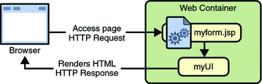
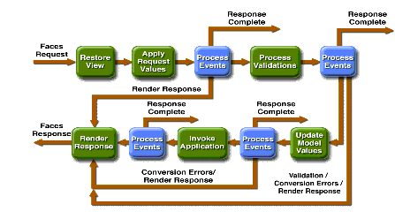

JavaServer Faces is a framework specification that was designed by Sun. The framework connects custom UI components with the model in the background and the controller. The controller navigation is configured through an xml configuration file named faces-config.xml. The controller is generated when the application is deployed and the controller combines the model and the view which is defined in the xml configuration.
There are several components involved in creating a JavaServer Faces application. These will be described based on their placement in the MVC design pattern.
UI Components (View)
The heart of the UI component of JSF is the JSP JSTL (Java Standard Tag Library) that allows for the generation of HTML components on the server side. The model and data objects are binded to the UI components in the JSP files to provide state. The following diagram portrays the actions of the UI portion of JSF.

Event handlers connect the UI to the objects in the model and provide state in a stateless environment. These event handlers automatically invoke the controller when an action is performed and the view is updated through the model. Since stateful objects are binded to UI components, the stateful objects are recreated on events. The end product is a stateful, MVC web-based application.
Backing Beans (Model)
Each JSP file that contains a view for the application should also have a backing bean that contains the business logic for the actions that are performed in the corresponding view. Any event listeners are programmed in the backing bean and are invoked by the controller.
Faces Servlet (Controller)
The controller is generated as a servlet through configuration files that define the navigation, backing beans, POJO's, event listeners, and validators. The faces servlet is configured through the faces-config.xml file.
Here is an example faces-config.xml:
<?xml version='1.0' encoding='UTF-8'?>
<!DOCTYPE faces-config PUBLIC …>
<faces-config>
<navigation-rule>
<from-view-id>/blah.jsp</from-view-id>
<navigation-case>
<from-outcome>some string</from-outcome>
<to-view-id>/WEB-INF/results/something.jsp</to-view-id>
</navigation-case>
</navigation-rule>
</faces-config>
More information can exist inside the faces-config.xml file.
Event Handlers
The event handlers are called after an event on the client side occurs. This helps to make programming JSF applications more like programming desktop applications, which are event driven.
This is a simplified version of the request lifecycle of a JSF request.

The following can be represented with the following steps:
Understanding the lifecycle of a JSF request is important for debugging and redirecting.
There are a number of JavaServer Faces tools available for a number of different IDEs, including Eclipse and Netbeans. The following tutorial is available to learn the WTP tools for eclipse.
As you can see, the newest version of Eclipse (WTP version) includes a faces-config.xml visual editor. It allows you to control the navigation, managed beans, components and other features that are included in the WTP version of Eclipse. The tutorial covering these topics can be found here.
Sources:
Geary, David and Cay Horstmann. Core JavaServer Faces. 2nd Edition. Santa Clara, CA: Prentice Hall, 2007.
Hall, Marty. JavaServer Faces Tutorial. 7 April 2009 <http://www.coreservlets.com/JSF-Tutorial/>.
Srinivasn, Raghu. "JavaServer Faces Tools." 24 May 2006. WTP Tutorials. 7 April 2009 <http://www.eclipse.org/webtools/jsf/dev_resource/JSFTutorial-RC3/JSFTools_tutorial.html >.
Sun Microsystems. Java EE 5 Tutorial. October 2008. 7 April 2009 <http://java.sun.com/javaee/5/docs/tutorial/doc/bnaph.html>.
Sun Microsystems. "The Life Cycle of a JavaServer Faces Page." December 2005. The J2EE 1.4 Tutorial. 7 April 2009 <http://java.sun.com/j2ee/1.4/docs/tutorial/doc/JSFIntro10.html#wp123500>.